FromZeroToHero
A free curriculum for data science, AI and cloudVeri bilimi, AI ve cloud için ücretsiz bir müfredat
*27 sections and 355+ notebooks in one ordered path**tek ve sıralı bir yolda 27 bölüm ve 355+ notebook*I published a free curriculum with 27 sections and more than 355 Jupyter notebooks. It goes from Python to LLM engineering, MLOps and GPU programming. Six role-based paths show the correct order for each job.
27 bölüm ve 355'ten fazla Jupyter notebook içeren ücretsiz bir müfredat yayınladım. Müfredat Python'dan LLM mühendisliğine, MLOps'a ve GPU programlamaya kadar gider. Altı rol bazlı yol, her iş için doğru sırayı gösterir.
1. The problem1. Problem
Most learning material for data science and AI is fragmented. One course teaches pandas and a different course teaches one algorithm. A bootcamp teaches "AI" but does not teach SQL or infrastructure.
This repository is one ordered path. It starts with Python and statistics and continues to deep learning, LLM engineering, MLOps and GPU programming. Each lesson has a level from beginner to expert.
Veri bilimi ve AI için öğrenme materyallerinin çoğu parçalıdır. Bir kurs pandas'ı, başka bir kurs tek bir algoritmayı öğretir. Bir bootcamp "AI" öğretir, ancak SQL veya altyapıyı öğretmez.
Bu repo tek ve sıralı bir yoldur. Python ve istatistikle başlar; deep learning, LLM mühendisliği, MLOps ve GPU programlama ile devam eder. Her dersin başlangıçtan uzmana kadar bir seviyesi vardır.
2. Role-based paths2. Rol bazlı yollar

I generated the lesson content with AI assistance. Then I reviewed, selected and structured it. The README states this clearly.
Ders içeriğini AI desteğiyle ürettim. Ardından gözden geçirdim, seçtim ve yapılandırdım. README bunu açıkça belirtir.